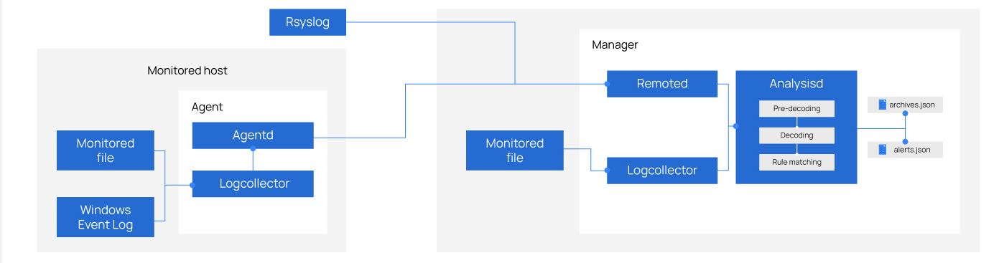
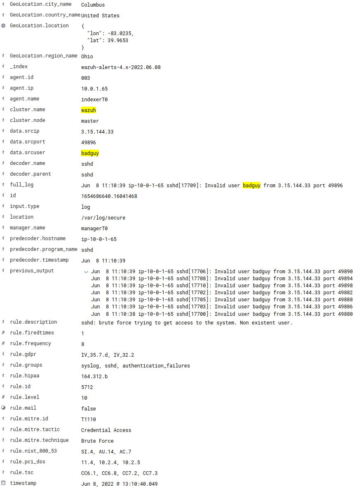

Session 2
Log Analysis
Log Analysis and Assessment with Wazuh
Log Analysis 101:
A log message is something generated by some device or system to denote that something has happened. But what does a log message look like?
A log message typically consists of these three components:
Timestamp
Source
Data
The timestamp is critical to know WHEN an incident occurred. The IS0 8601 standard should be used to represent timestamps in a log file as it is an international accepted way to represent dates and times. Timestamps according to ISO 8601 should be displayed in a YYYY-MM-DD format; unfortunately this is most often not the case. The source is usually an IP address or hostname, indicating the system that generated the log message. The data field displays WHAT happened on the system. Other items in the log message may include the destination IP address (commonly found in proxy or webserver logs), user names, program names and so on. There is unfortunately no standard format for how data is represented in a log message. The exact way a log message is represented depends on how the source of the log message has implemented its log data system. This makes it a lot harder to detect any anomalies for custom applications when Wazuh’s pre-installed decoders and rules cannot parse the log message properly.
There are different approaches when it comes to log management and analysis. The solution depends on the number of systems being monitored and sometimes also the company’s compliance needs, especially for larger corporations. The minimum effort would be a simple centralised log server that collects various logfiles – real-time alerting and compliant specific reporting is a bonus, but this usually exceeds the functionality of a simplistic log management environment. Depending on the size of the environment and of course also the budget, this could be expanded by tasks handled by a Secure Information and Event Management (SIEM) system, e.g threat detection, file integrity monitoring, vulnerability assessment. Those features are great when you have a vast and complex environment, as it gives a good overview on what is currently happening on the systems. Log-Analysis tools give an in-depth analysis of log information and will also enable the generation of alerts based on events in real-time. They also generate summary reports and offer a couple of features to reduce the amount of time needed to do the daily log review. Sometimes they also perform log forensics when events occur.
How does log analysis work in Wazuh?
Log Analysis (or log inspection) is done inside Wazuh by the wazuh-logcollector (on the client side) and the analysisd (on the server side) processes. The official documentation and literature on Wazuh refers to the client as an agent, and the server is referenced as the Wazuh manager. The following figure shows how the individual Wazuh processes, on the agent as well as on the master, cooperate.

The wazuh-logcollector on the agent is responsible for collecting and aggregating the logs, whereas the remoted process on the Wazuh manager is used for receiving and forwarding the log events to the analysisd process on the Wazuh manager.
The analysisd process is used for decoding, filtering and the classification of the events due to their criticality.
The transport and the analysing of log events is performed in real time, which means as soon as a log event is written it is transported and processed by Wazuh. According to the official documentation, Wazuh can read events from internal log files, from the Windows event log Certain compliance regulations and industry standards, such as the Payment Card Industry (PCI) data security standard, have specific requirements surrounding log collection and retention. Wazuh can log everything that is received by remote syslog and store it permanently, this option is called <log_all> </log_all> and can be set within the <global> </global> tag.
The memory and CPU usage of the agent is insignificant because it only forwards events to the manager, however on the master CPU and memory consumption can increase quickly depending on the events per second (EPS) that the master has to analyse and correlate.
The following Code block shows an excerpt of the ossec.log during log analysis:
2021/09/10 12:27:27 wazuh-logcollector: INFO: Monitoring output of command(360): df -P
2021/09/10 12:27:27 wazuh-logcollector: INFO: Monitoring full output of command(360): netstat -tulpn | sed 's/\([[:alnum:]]\+\)\ \+[[:digit:]]\+\ \+[[:digit:]]\+\ \+\(.*\):\([[:digit:]]*\)\ \+\([0-9\.\:\*]\+\).\+\ \([[:digit:]]*\/[[:alnum:]\-]*\).*/\1 \2 == \3 == \4 \5/' | sort -k 4 -g | sed 's/ == \(.*\) ==/:\1/' | sed 1,2d
2021/09/10 12:27:27 wazuh-logcollector: INFO: Monitoring full output of command(360): last -n 20
2021/09/10 12:27:27 wazuh-logcollector: INFO: (1950): Analyzing file: '/var/ossec/logs/active-responses.log'.
2021/09/10 12:27:27 wazuh-logcollector: INFO: (1950): Analyzing file: '/var/log/messages'.
2021/09/10 12:27:27 wazuh-logcollector: INFO: (1950): Analyzing file: '/var/log/secure'.
2021/09/10 12:27:27 wazuh-logcollector: INFO: (1950): Analyzing file: '/var/log/maillog'.
2021/09/10 12:27:27 wazuh-logcollector: INFO: (1950): Analyzing file: '/var/log/audit/audit.log'.
2021/09/10 12:27:27 wazuh-logcollector: INFO: Started (pid: 9979).
The wazuh-logcollector process collects and centralises log data (audit trails) for system and application logs. It can read messages from different locations and forward those to the Wazuh manager, where those are processed by the analysisd. The analysisd daemon provides mechanisms to analyse the data collected by the logcollector using detection signatures and rules to perform correlation.
Log Retention Time
The PCI DSS compliance standard does not mandate a specific time frame for log retention, only mentions that in
order to define appropriate retention requirements, an entity first needs to understand their own business needs
as well as any legal or regulatory obligations that apply to their industry, and/or that apply to the type of data
being retained. This means the individual entity, being a corporation or financial institution, needs to define its
own log retention policy due to their legal and regulatory needs. The minimum should be considered thirteen months,
to collect data for more than a year. However, the PCI DSS also specifies that, identifying and deleting stored data
that has exceeded its specified retention period prevents unnecessary retention of data that is no longer needed,
which essentially means data that is no longer needed has to be deleted permanently. If the aforementioned <log_all>
option is enabled Wazuh stores and archives the logs indefinitely until they are deleted manually. Wazuh uses log-rotation
and stores the archived logs in /var/ossec/logs/archives/ and creates an individual directory for each year and month.
Consequently logs older than, for example, 9 months can be deleted with an automated script or cronjob.
Lab Exercise 2A - explore brute force attack
Lab Objective:
Generate a Brute Force Attack – Simulate an ssh brute force attack by repeatedly attempting to use ssh to login from your
linux-agentto yourindexersystem. Then analyze this attack via the Wazuh dashboard Discover tab.Lab Exercise Resolution:
Install the hydra program on your
linux-agentwhich is a very fast network logon cracker.apt -y install hydra
Using hydra on
linux-agent, run the following commands to create a password list and cause 9 failed ssh attempts to your indexer system in a small time window.for i in {1..9}; do echo $i >> pass.list; done hydra -l badguy -P pass.list indexerA6.lab.wazuh.info ssh -IHydra v8.6 (c) 2017 by van Hauser/THC - Please do not use in military or secret service organizations, or for illegal purposes. Hydra (http://www.thc.org/thc-hydra) starting at 2022-06-07 19:05:48 [WARNING] Many SSH configurations limit the number of parallel tasks, it is recommended to reduce the tasks: use -t 4 [DATA] max 9 tasks per 1 server, overall 9 tasks, 9 login tries (l:1/p:9), ~1 try per task [DATA] attacking ssh://indexerA6.lab.wazuh.info:22/ 1 of 1 target completed, 0 valid passwords found Hydra (http://www.thc.org/thc-hydra) finished at 2021-11-02 19:05:50
In your Wazuh dashboard browser session, select the Threat Hunting option under the Threat intelligence section, enter badguy in the search field and then click on the search button.
Observe what the results look like in dashboard form and then click on the Events tab to take a closer look.
5. Note the time sort is descending, so looking at the bottom of the result set first and working your way up, you should see 7 alerts on rule 5710 about the same repeating event followed by the same exact event tripping a different higher level alert 5712 on the 8th repetition.
6. Expand one of the search results by clicking the
magnifying glassicon on the left side of the search result to see the detail of the alert and underlying event. Notice the rich Wazuh event and alert metadata, as well as the geoip enrichment that was added by the Wazuh indexer.All the alerts we are seeing in the Wazuh dashboard are originally written by the Wazuh manager to the
/var/ossec/logs/alerts/alerts.jsonfile and then forwarded by Filebeat to the Wazuh indexer.In this lab exercise you will see that Wazuh indexer performs GeoIP lookups based on the source IP address using the corresponding processor available for the ingest pipeline. Much more is possible in this area with the available processors, as we will see later.
Example of an expanded alert 5712 record from this lab:

In the above, you can see the program_name (sshd), the alert level (10), the rule description that triggered (SSHD brute force trying to get access), how often the Wazuh rule fired (1) and of course which Wazuh rule generated this alert (5712). This same information is found in the expanded events from rule.id 5710.
Now, let’s take a closer look the rules that were triggered by these events:
The first rule that creates an alert for our bad ssh login attempts is rule 5710 signifying a severity level of 5.
<rule id="5710" level="5"> <if_sid>5700</if_sid> <match>illegal user|invalid user</match> <description>sshd: Attempt to login using a non-existent user</description> <mitre> <id>T1110.001</id> <id>T1021.004</id> <id>T1078</id> </mitre> <group>authentication_failed,gdpr_IV_35.7.d,gdpr_IV_32.2,gpg13_7.1,hipaa_164.312.b,invalid_login,nist_800_53_AU.14,nist_800_53_AC.7,nist_800_53_AU.6,pci_dss_10.2.4,pci_dss_10.2.5,pci_dss_10.6.1,tsc_CC6.1,tsc_CC6.8,tsc_CC7.2,tsc_CC7.3,</group> </rule>The above rule is a fairly simple rule that is set to alert on any ssh event that includes either the phrase illegal user or invalid user.
In the event that rule 5710 occurs repeatedly, this is then escalated based on the criteria in rule 5712 as show below:
<rule id="5712" level="10" frequency="8" timeframe="120" ignore="60"> <if_matched_sid>5710</if_matched_sid> <same_source_ip /> <description>sshd: brute force trying to get access to the system. Non existent user.</description> <mitre> <id>T1110</id> </mitre> <group>authentication_failures,gdpr_IV_35.7.d,gdpr_IV_32.2,hipaa_164.312.b,nist_800_53_SI.4,nist_800_53_AU.14,nist_800_53_AC.7,pci_dss_11.4,pci_dss_10.2.4,pci_dss_10.2.5,tsc_CC6.1,tsc_CC6.8,tsc_CC7.2,tsc_CC7.3,</group> </rule>
Alert Assessment
Applying human intelligence to assess alerts generated by Wazuh
In most environments Wazuh will generate many alerts, most of which will not be actionable. How do we get actionable insight from our huge pile of Wazuh alerts?
Usually the alerts level, the description (log message) and the grouping information (rules group) are a good indicator of compromise. If the attack was a failed login attempt, we should check if the user being used really exists on the system. Wazuh tells us this by the alert description “Attempt to login using a non-existent user”. The attackers usually try to use popular users, such as “root”, “admin”, “pi” …
When investigating an attack, we should also check if the source IP address (external) is known to be malicious by querying public reputation databases. WAZUH is currently looking into integrating Alienvault’s OTX database, which keeps track of this.
Tools to support assessment process
Wazuh dashboard - query for all events involving the attacking IP. Use the Wazuh Alerts dashboard for a high level view
Public threat intel dig for reputation of attacking IP
Abuse IPB https://www.abuseipdb.com/
Barracuda Central’s Lookup Database http://www.barracudacentral.org/lookups/lookup-reputation
CRYEN’s IP Reputation database http://www.cyren.com/ip-reputation-check.html
Alienvault’s OTX database (https://otx.alienvault.com/)
IP space, domain name, and GeoIP location lookups
Lab Exercise 2B - Assess several malicious alerts
Assess several malicious-looking log entries reported by Wazuh in the Security Events dashboard or inside the alerts.json file. Gain as much insight as possible about the nature of the attack and the identity of the attacker. Record your observations.
Knowing the rules
Part of being able to assess rules is knowing the criteria that lead to them firing. Wazuh rules are spread across many files and it is helpful to be able to quickly look up rules and their parent rules with the help of an extra script for this purpose.
Using the Wazuh dashboard plugin
When seeing any event in Wazuh you may click on the value for the Rule ID and it will open the information page for that specific rule. You may also find it by using the search box in the Rules section under Wazuh > Management.